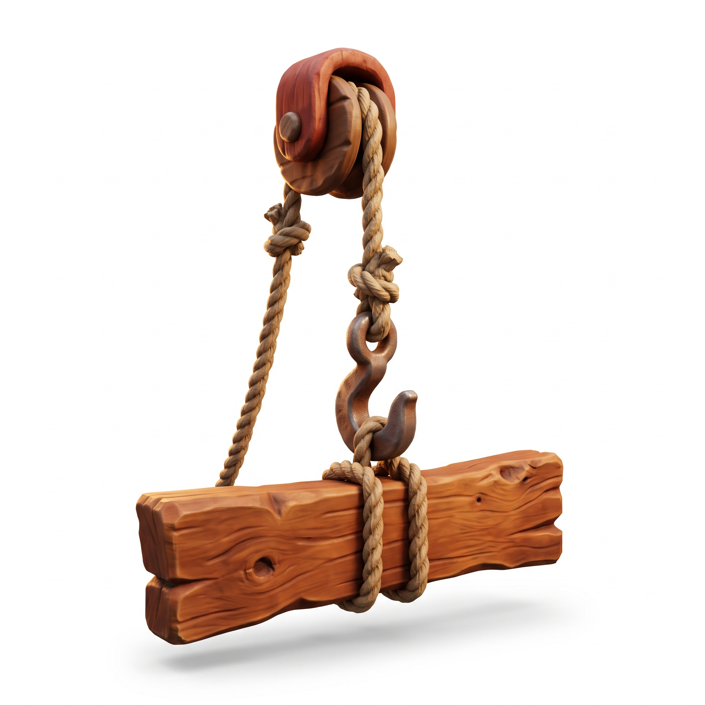
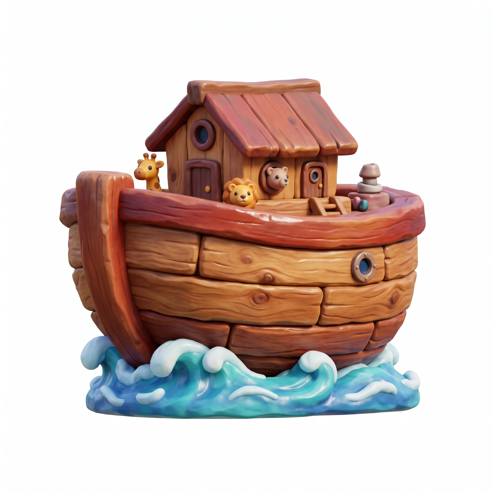
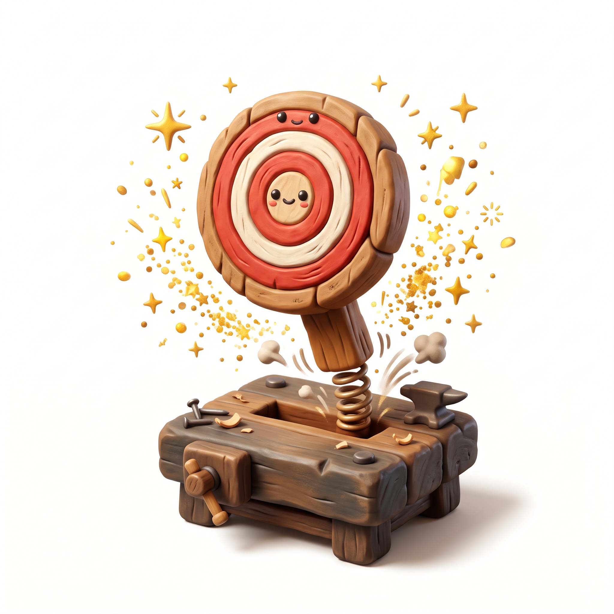

AKSI FISIKA 1 • AYUN & JATUHKAN
DEREK AYUN BAHTERA
Bidik ayunan katrol derek! Jatuhkan balok kayu yang benar tepat ke tengah rangka Bahtera!

AKSI FISIKA 2 • KEMUDI KAPAL
KEMUDI PENYELAMAT
Kemudikan Bahtera di 3 jalur ombak! Jemput gelembung kebaikan & hindari pusaran badai!

AKSI REFLEKS 3 • 2 ATAU 4 SISWA PID
KETUK PALU CEPAT
Papan target menyembul dari meja kerja! Pukul target yang benar dengan Palu Emas 3D!